This topic includes information about how to install the DxI 9000 instrument.
Space Requirements
Be sure there is adequate space for the instrument in the installation location. See the
DxI 9000 Preinstallation Checklist for more information about space requirements.
Recommended Tools
Side-cutter or similar snipping tool
Metric hex driver set
Required Supplies
All of the supplies listed in this subtopic are required for completing the installation.
Important: Do not attempt to install the instrument without all the supplies listed. The supplies must be on-site or brought to the site by the field service engineer at the time of installation.
Table 1: Required Supplies for All Installations
For all installations
USB flash drive with relevant RAPIDs test files.
DxS IntelliServe enrollment certificate.
Important: You must obtain this certificate in advance of the installation. See the Remote Solutions Service Manual for more information.
If you are installing the first DxI 9000 instrument in the lab, the installation kit will include items for each site and for each instrument.
If there is already a DxI 9000 instrument installed in the lab, the installation kit will include only the required supplies for each instrument.
Table 2: Required Supplies for Each Site
Item
Part Number
Qty
DxI WASTE BAGS, 100 PACK
C26676 or C62616 or D30232
1
CITRANOX, 1 X 1 GALLON
81912
1
CONTRAD 70, 1 X 1 LITER
81911
1
ACCESS SAMPLE CUPS
81902
1
RINGED REACTION VESSELS
386167
1
TOOL KIT, DXI 9000
C39615
1
Table 3: Required Supplies for Each Instrument
Item
Part Number
Qty
International power cable
C70453
1
Cord, Main Power, Auto Lock
C13559
1
DxI 9000 KIT DRAIN WASTE LIQUID Waste Tubing
C79322
1
Lumi-Phos PRO Substrate
B96000
1
DxLAB Dispo Tips, 16 Kits/Box
C22704
1
DxLAB Universal Tube Racks, 10/Box
C22708
2
DxLAB Universal Cup Racks, 10/Box
C22709
1
SPU OFFLOAD, RACK CARRIER
C52634
1
Ethernet cable
C973056
50 feet
Lbl, DxLAB Tube Racks, set 11001 - 11100
C56462
100 Labels
Lbl, DxLAB Cup Racks, set 21001 - 21100
C56464
100 Labels
TUBE, 13 x 100 mm, 9 mL
Note: These are 13x100 glass tubes for performing camera calibrations.
D01860
21
Automated System Diagnostic (ASD) Reagent Pack
C23913
4
FIELD SERVICE SYS CHECK
A21537
1
UNICEL DXi Wash Buffer II
A16793
2
Fresh 1:501 system check dilution
Note: To make the dilution, add 20uL of Field Service (FS) system check solution (A21537) to 10mL of WashBuffer II (A16793) and mix gently.
Important: Observe the operation of the instrument and troubleshoot issues. You may need to check or adjust some alignments, camera calibrations, and pressure sensor calibrations. Review system events and troubleshoot messages accordingly. The need to adjust alignments and calibrate cameras and pressure sensors is fully expected and is not something that needs to be reported as an issue. See
Troubleshooting Common Installation Failures for more information about troubleshooting common installation failures.
Install the aspirate peristaltic pump tubing into the pump cassettes.
Important: Allow for extra tubing on the left side to ensure adequate slack to prevent kinking. Install the cassettes with the black tabs on the left side and the springs on the right side.
Figure 15:
Unscrew the bolt on the front of the fluidics drawer to open the drawer.
Open the wash buffer drawer.
Remove both the wash buffer intermediate tank float switch and the liquid waste float switch from the drawer. Install them in the appropriate tank.
Figure 16:
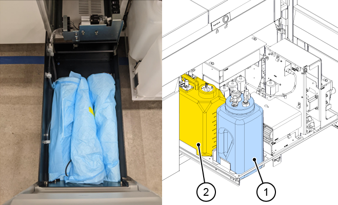
1
Liquid waste reservoir
2
Wash buffer reservoir
In the wash buffer drawer, remove the towel from the liquid waste float switch.
Unscrew the nut from the liquid waste float switch.
Disconnect the three quick connects on top of the liquid waste tank.
Unscrew the liquid waste container cover from the liquid waste tank.
Place the gasket on inside of the liquid waste tank cover.
Figure 17:
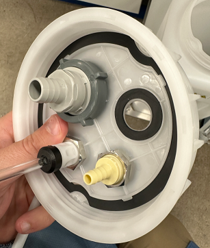
Insert the liquid waste float sensor through the cover. Hold the gasket in place and tighten the nut on top of the cover.
Tighten the liquid waste cover securely onto the liquid waste tank.
Note: Two notches on the liquid waste cover should aliqn with notches on the liquid waste tank.
Reconnect the liquid waste float switch electrical connection and the three fluidics quick connects.
Step 3: Install the Console PC Monitor and Connections
Remove the monitor from the monitor box.
Install the barcode reader bracket onto the rear of the monitor using only the top two screws. Leave the screws loose with at least a 1/4" gap for mounting to the monitor arm.
Figure 25: Barcode Reader Bracket and Screws
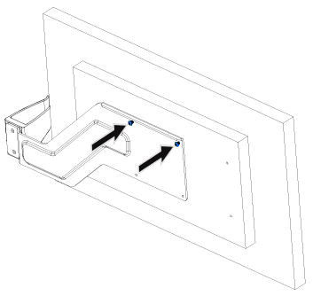
Place the monitor onto the monitor arm by sliding the top two screws into the slotted mounting positions at the top of the monitor arm mounting bracket.
Figure 26: Monitor Arm and Upper Screws
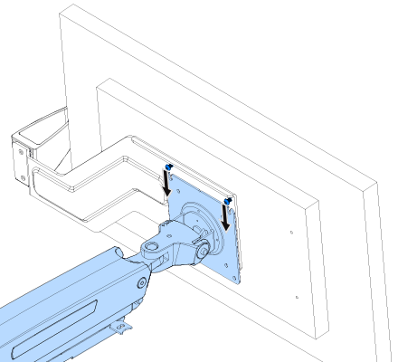
Install the lower two screws and tighten all four to secure the monitor to the monitor arm.
Figure 27: Monitor Arm and Lower Screws
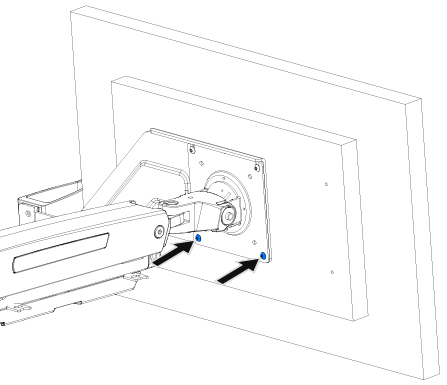
Adjust the tension of the monitor arm as needed. To increase the tension and stiffness of the monitor arm, insert a hex driver into the end of the tension shaft and turn it clockwise.
Note: It may take as many as nine or ten turns to achieve the desired tension.
Figure 28: Monitor Arm Tension Shaft
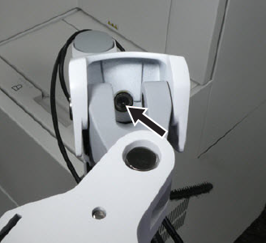
Figure 29:
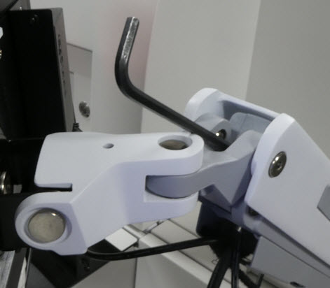
Connect all cables to the rear of the monitor:
Figure 30:
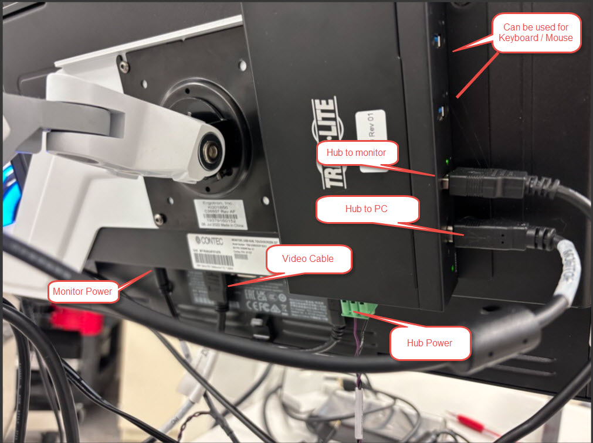
Tip: To connect the
GREEN connector, first pull out the
GREEN plug on the monitor. If your instrument does not have a
GREEN connector, leave the plug in place.
Note: You may discard the gray wire wrap that is included in the monitor box.
Plug the RJ-45 Ethernet connector into the bottom of the handheld barcode scanner. Be sure connector clicks into place.
Figure 31:
Connect the power cable to the instrument and power source.
Caution: Be sure the main breaker is in the
OFF position prior to connecting the power cable.
Note: For details about installing an international power cable with "flying leads," see
Installing the International Power Cord for more information. The international power cord does not have a "locking" plug at the instrument side like the North America cable does.
Turn on the main breaker at the rear of the instrument near the power cable connection.
Use the power switch on the rear of the monitor to turn on the monitor.
In the lower right cabinet, turn on the standby switch. Allow the instrument to start up and display the sign in screen.
Press the button on the barcode reader to confirm it has power. The barcode reader should illuminate blue.
Figure 32:
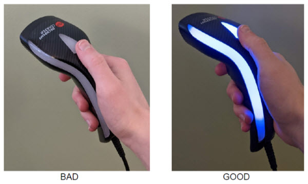
If the barcode reader does not illuminate:
Check the physical connection of the barcode reader to the console behind the lower right door. The barcode reader connects via a USB cable to the front of the console near the power switch.
Follow the steps identified in
Cat-2 MOD 13066 Handheld Barcode Configuration - Update to reconfigure the barcode reader to the default settings.
If barcode reader issues persist, order a replacement barcode reader or contact technical support for further troubleshooting.
Unscrew the bolt on the front of the fluidics drawer and open the drawer.
Unscrew the cap and pull the float sensors out of the liquid waste reservoir.
Place the float sensors on a kim wipe or dryer.
Figure 33:
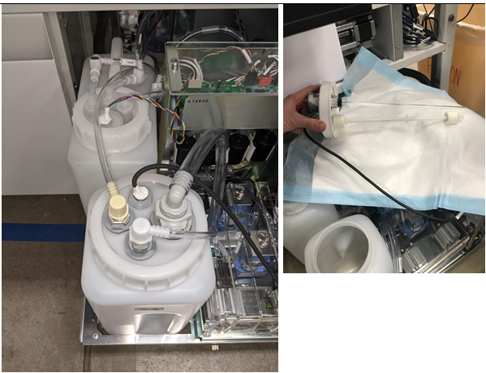
Tip: You may need to disconnect some of the tubes to lay the sensors down.
Important: After you finish, reconnect any tubes that you have disconnected.
While you observe the status of the lights on the fluidics board, turn the liquid waste reservoir sensor upside down. The LED lights above the high cera pumps on the fluidics board should change.
Figure 34: Fluidics Board (LED lights changing)
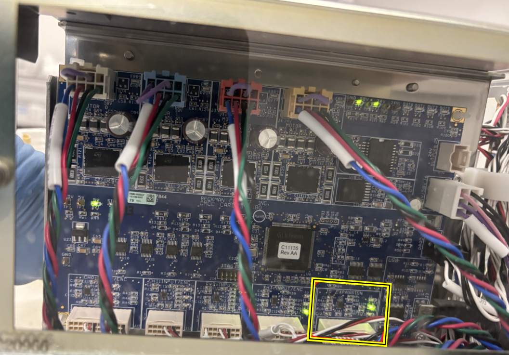
When you turn the liquid waste reservoir float sensor upside down, the top lights will turn off, and the bottom lights will turn on.
Figure 35: Liquid Waste Reservoir Float Sensor and Level Statuses
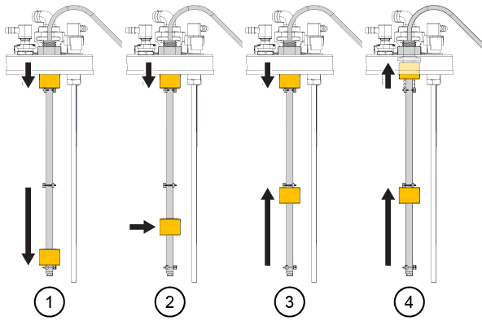
1
Status: Low
2
Status: Normal
3
Status: High
4
Status: Critical High
Return the float sensors to the liquid waste intermediate waste reservoir.
Important: Reconnect any tubes that you have disconnected.
Unscrew the bolt on the front of the fluidics drawer and open the drawer.
Unscrew the cap and pull the float sensors out of the wash buffer reservoir. Tilt the reservoir, if necessary.
Caution: Be careful not to disturb the wiring.
Important: Be careful not to spill any wash buffer, damage the sensors, or contaminate the wash buffer.
Figure 36:
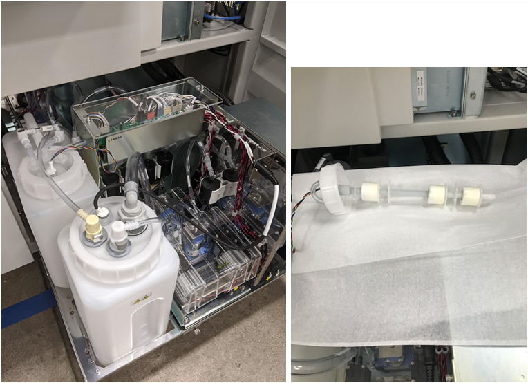
Place the float sensors on a kim wipe or dryer.
In the Machine Control App go to
MENU > Machine Control > WashFluidics > WashFluidics.Assembly.
On the Action tab select
CheckReservoirLevel.
Select
Execute.
On the Configuration tab view the reading for
ReservoirState.
Figure 37:
Compare the reading with the physical reading relative to the float sensors. The plastic rings between the floats use sensors to detect where the floats are located.
Important: If the sensor state is not accurate, stop and troubleshoot the float sensors.
Figure 38: Wash Buffer Reservoir Float Sensor and Level Statuses
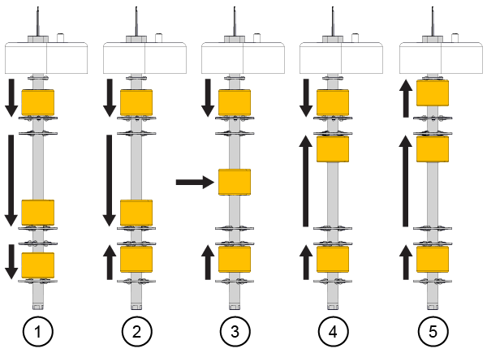
1
Status: Critical Low
2
Status: Low
3
Status: Normal
4
Status: High
5
Status: Critical High
Return the float sensors to the wash buffer reservoir.
Important: Reconnect any tubes that you have disconnected.
Note: The wash buffer supply may not reflect the actual volume in the containers, because the system may not update supply counts until after the system has been initialized. Wash buffer supply is not a live measure of the physical contents of the container. See the Instructions for Use (IFU) for more information.
Observe the operation of the instrument. After a system has been shut down for an extended period of time, initialization may fail on the first attempt. Repeat initialization, as necessary. If initialization failures persist, you may need to check or adjust some alignments, camera calibrations, and pressure sensor calibrations. Review system events and troubleshoot messages accordingly. The need to adjust alignments and calibrate cameras and pressure sensors is fully expected and is not something that needs to be reported as an issue.
During initialization, perform the following procedures.
Note: In the
Installing RAPID Test File Packages procedure, ignore the step for restarting the PC. You will restart the PC later in this installation procedure.
Step 14: Configure, Connect, and Enroll DxS Intelliserve
Configure and connect the instrument to the network, and enroll the instrument on DxS Intelliserve. See
Connectivity (DxS, LAS, LIS, Peripherals) for more information.
Note: Installation requires a connection certificate, which must be obtained from the DxS team prior to installation.
Load disposable tips by placing the tip trays on the loader and pressing the button. Load four sets of disposable tips (16 tip trays total) and initialize the instrument at least three times to confirm tray gripper to tray alignments. See
Initializing the Instrument for more information.
Note: To load tip trays, the loader light must be illuminated, and the system must be in a
GREEN (Ready) status. If the loader light is not illuminated, review system errors and the instrument status.
While you calibrate gripper timing, you must also prime the instrument.
Use the Machine Control App to configure the instrument for an empty substrate priming, and then prime the substrate system. See
Priming an Empty Substrate System for more information.
Note: You
must perform this procedure to be sure all air bubbles have been purged from substrate lines. A standard prime is insufficient.
Prime all other components a minimum of ten cycles, and confirm fluid is present in all lines. See
Priming the Instrument for more information.
Note: Watch for leaks at the reagent pipettors and in the wash wheel fluid lines.
While the instrument is priming, enable tests. See
Enabling Tests for more information.
Important: To save the gripper timing calibration, you must restart the console PC after you finish calibrating the gripper timing and priming the instrument.
Step 22: Perform Sample Presentation Unit (SPU) Camera Diagnostics
Determine all cup and tube types the customer plans to use for sample processing. For each container type, fill up at least two racks with that container type (e.g. if the customer is using 13x100 and 12x75 tubes for sample processing, load two racks with only 13x100 tubes and load another two racks with 12x75 tubes) and run the sample presentation unit (SPU) camera diagnostic. See
Performing Sample Presentation Unit (SPU) Camera Diagnostics for more information.
Note: If the automated system diagnostics (ASD) tests do not start, try loading a new ASD reagent pack.
Observe the operation of the instrument and troubleshoot issues. You may need to check or adjust some alignments, camera calibrations, and pressure sensor calibrations. Review system events and troubleshoot messages accordingly. The need to adjust alignments and calibrate cameras and pressure sensors is fully expected and is not something that needs to be reported as an issue. See
Troubleshooting Common Installation Failures for more information about troubleshooting common installation failures.
Note: During this step, if you see a Windows activation watermark on the screen, activate the Windows operating system license. See
Activating the Windows Operating System License for more information.
In the Machine Control App, on the Home page, clear the
Override No Calibration and
Override Expired Calibration options in the Calibration Settings, if they are selected.